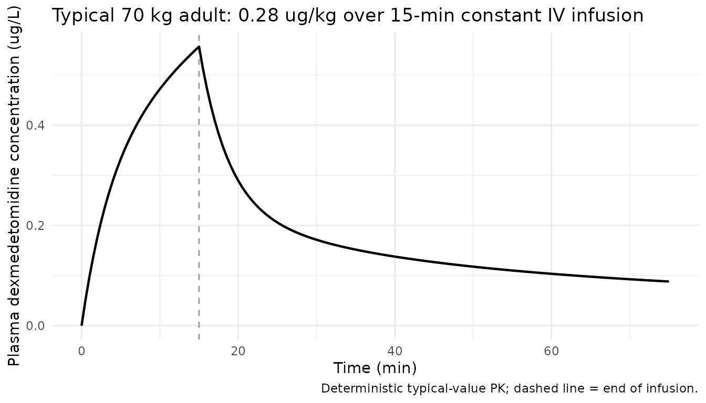
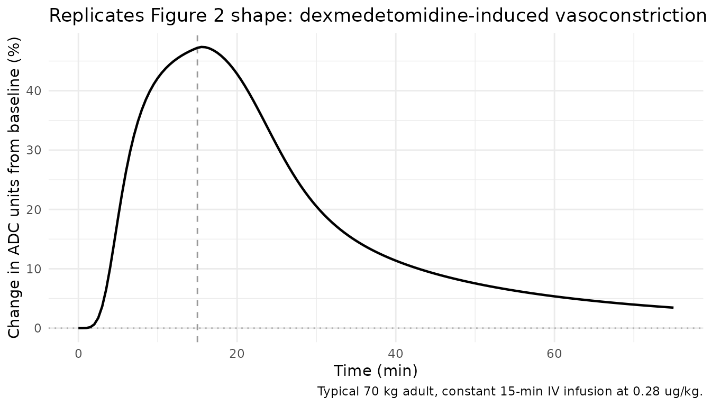
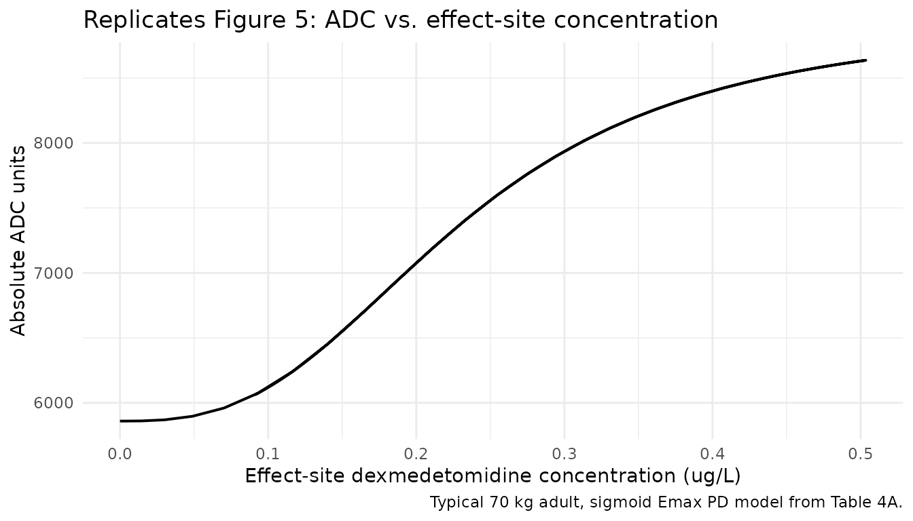
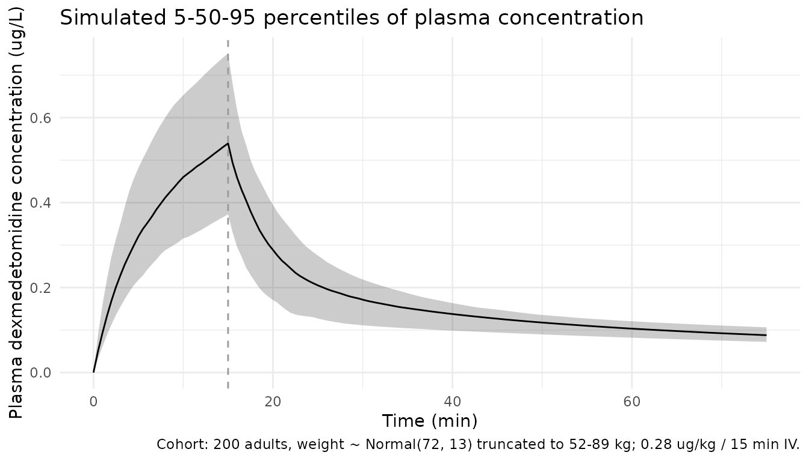

Dexmedetomidine (Talke 2018)
Source:vignettes/articles/Talke_2018_dexmedetomidine.Rmd
Talke_2018_dexmedetomidine.RmdModel and source
- Citation: Talke P, Anderson BJ. Pharmacokinetics and pharmacodynamics of dexmedetomidine-induced vasoconstriction in healthy volunteers. Br J Clin Pharmacol. 2018;84(7):1364-1372. doi:10.1111/bcp.13571
- Description: Three-compartment IV population PK plus effect-compartment sigmoid Emax PD model for dexmedetomidine-induced peripheral vasoconstriction (ADC units from finger photoplethysmography) in healthy adult volunteers, with a priori allometric body-weight scaling on CL, Q2, Q3 (exponent 0.75) and V1, V2, V3 (exponent 1) at a 70 kg reference weight (Talke and Anderson 2018, Tables 3 and 4)
- Article: https://doi.org/10.1111/bcp.13571
Population
The model was developed from 10 healthy adult volunteers (5 male, 5 female) studied at a single centre at the University of California, San Francisco (Talke 2018 Table 1). Mean age was 29 years (SD 4, range 21-36), mean weight 72 kg (SD 13, range 52-89), mean height 174 cm (SD 9, range 160-183) and mean BMI 23 kg/m^2 (SD 2, range 20-27). Sympathetic fibres of the left arm were blocked with an axillary perivascular brachial plexus block (30 mL of 1% mepivacaine) prior to the dexmedetomidine infusion to isolate the direct peripheral vasoconstrictor effect. Each volunteer received a 15-min target-controlled IV infusion of dexmedetomidine (cumulative dose 0.28 ug/kg) targeting a plasma concentration of 0.3 ng/mL, controlled by the STANPUMP software using older, fixed PK parameters; the actual PK parameters were re-estimated from the observed plasma concentrations. Race / ethnicity was not reported in Table 1 and is not a model covariate. PK data comprised 120 plasma samples; PD data comprised 4560 analogue-to-digital converter (ADC) photoplethysmography records of peripheral vasoconstriction (Talke 2018 Methods, Results).
The same information is available programmatically via
readModelDb("Talke_2018_dexmedetomidine")$population.
Source trace
Per-parameter origin is recorded as an in-file comment next to each
ini() entry in
inst/modeldb/specificDrugs/Talke_2018_dexmedetomidine.R.
The table below collects them for review.
| Equation / parameter | Value | Source location |
|---|---|---|
| Structural model | 3-compartment IV PK + effect compartment + sigmoid Emax PD | Talke 2018 Methods, “PKPD analysis” paragraph; Tables 3A, 4A |
lcl (CL at 70 kg) |
log(0.751) L/min |
Table 3A: CL = 0.751 L/min/70kg (PPV 0.158, SE 4.6%) |
lvc (V1 at 70 kg) |
log(12) L |
Table 3A: V1 = 12 L/70kg (PPV 0.339, SE 6.3%) |
lq (Q2 at 70 kg) |
log(1.01) L/min |
Table 3A: Q2 = 1.01 L/min/70kg (PPV 0.590, SE 11.2%) |
lvp (V2 at 70 kg) |
log(11.7) L |
Table 3A: V2 = 11.7 L/70kg (PPV 0.868, SE 13.1%) |
lq2 (Q3 at 70 kg) |
log(1.03) L/min |
Table 3A: Q3 = 1.03 L/min/70kg (no IIV) |
lvp2 (V3 at 70 kg) |
log(47.2) L |
Table 3A: V3 = 47.2 L/70kg (no IIV) |
le0 (baseline ADC) |
log(5860) |
Table 4A: E0 = 5860 ADC units (PPV 0.462) |
lemax (max ADC effect) |
log(3090) |
Table 4A: EMAX = 3090 ADC units (PPV 1.349) |
lc50 (effect-site EC50) |
log(0.233) ug/L |
Table 4A: C50 = 0.233 ug/L (PPV 1.628) |
lhill (Hill coefficient) |
log(2.83) |
Table 4A: N = 2.83 (no IIV) |
lt12keo (effect t1/2) |
log(2.16) min |
Table 4A: t1/2 keo = 2.16 min (PPV 0.841); keo = log(2)/t1/2 keo |
e_wt_cl |
fixed(0.75) |
Methods: PWR = 0.75 for clearance terms (a priori, fixed) |
e_wt_vc |
fixed(1) |
Methods: PWR = 1 for distribution volumes (a priori, fixed) |
| PK BLOCK(4) IIV (CL,V1,Q2,V2) | full block | Tables 3A (PPV) and 3B (correlations) |
| PD BLOCK(4) IIV (E0,EMAX,C50,t1/2 keo) | full block | Tables 4A (PPV) and 4B (correlations) |
addSd (PK additive) |
0.011 ug/L |
Table 3A: ERRADD = 0.011 ug/L |
propSd (PK proportional) |
0.104 |
Table 3A: ERRPROP = 10.4% |
addSd_vasocon (PD additive) |
113 ADC units |
Table 4A: ERRADD = 113 ADC units |
propSd_vasocon (PD proportional) |
0.618 |
Table 4A: ERRPROP = 61.8% |
| Reference subject | 70 kg adult | Methods: standardised to 70 kg via allometric model (Holford 1996) |
d/dt(central) |
3-cmt disposition | Methods, Results: three-compartment model preferred over two (delta-OFV 12.919, p < 0.005) |
d/dt(effect) = keo*(Cc - effect) |
effect compartment | Methods: equilibration rate constant keo = log(2)/t1/2 keo |
vasocon = E0 + Emax * Ce^N / (C50^N + Ce^N) |
sigmoid Emax | Methods: Effect equation in PD analysis paragraph |
Virtual cohort
The published individual-level data are not available. The cohort below approximates Talke 2018 Table 1 demographics: body weight is sampled from a normal distribution truncated to the paper’s reported range (52-89 kg) with mean 72 kg and SD 13 kg matching the paper. Each subject receives a 15-min IV infusion at a constant rate delivering the paper’s cumulative dose of 0.28 ug/kg into the central compartment.
set.seed(20180220) # paper accepted date
n_subj <- 200
cohort <- tibble(
id = seq_len(n_subj),
WT = pmin(pmax(rnorm(n_subj, mean = 72, sd = 13), 52), 89),
treatment = factor("0.28 ug/kg over 15 min, IV")
)The model is parameterised with explicit ODEs on
central, peripheral1, peripheral2
and effect. IV infusion dosing targets the
central compartment over a 15-min duration. Observation
samples follow the paper’s nominal schedule (1, 2, 3, 4, 5, 7.5, 10, 15
min on infusion; 30, 45, 75 min wall-clock = 15, 30, 60 min
post-infusion) plus a dense observation grid for the PD trace.
infusion_min <- 15
post_min <- 60
total_min <- infusion_min + post_min
dense_grid <- sort(unique(c(
seq(0, total_min, by = 0.5),
c(1, 2, 3, 4, 5, 7.5, 10, 15, 30, 45, 75)
)))
dose_rows <- cohort |>
dplyr::mutate(time = 0,
amt = 0.28 * WT,
dur = infusion_min,
cmt = "central",
evid = 1L)
obs_cc <- cohort |>
tidyr::crossing(time = dense_grid) |>
dplyr::mutate(amt = 0, dur = NA_real_, cmt = "Cc", evid = 0L)
obs_vasocon <- cohort |>
tidyr::crossing(time = dense_grid) |>
dplyr::mutate(amt = 0, dur = NA_real_, cmt = "vasocon", evid = 0L)
events <- dplyr::bind_rows(dose_rows, obs_cc, obs_vasocon) |>
dplyr::select(id, time, amt, dur, cmt, evid, WT, treatment) |>
dplyr::arrange(id, time, dplyr::desc(evid))
stopifnot(!anyDuplicated(unique(events[, c("id", "time", "evid")])))Simulation
mod <- rxode2::rxode2(readModelDb("Talke_2018_dexmedetomidine"))
conc_unit <- mod$units[["concentration"]]
sim <- rxode2::rxSolve(
mod, events = events,
keep = c("WT", "treatment"),
returnType = "data.frame"
)
#> Warning: corrected 'omega' to be a symmetric, positive definite matrix
# Multi-output: filter the simulated data by observation compartment so each
# time point contributes exactly one row per output. CMT 5 = Cc observations,
# CMT 6 = vasocon observations (compartment ordering follows the d/dt() and
# observation-equation declaration order in model()).
sim_cc <- sim |> dplyr::filter(CMT == 5)
sim_vasocon <- sim |> dplyr::filter(CMT == 6)Replicate published figures
Typical-value plasma and effect-site profile
Talke 2018 Table 2 reports mean plasma dexmedetomidine concentrations during and after the STANPUMP-controlled infusion: peak 1.11 ng/mL at 4 min, declining to 0.43 ng/mL at end of infusion (15 min), 0.39 ng/mL at 5 min post-infusion, 0.16 ng/mL at 30 min post and 0.09 ng/mL at 60 min post. Those measured concentrations reflect a non-uniform STANPUMP delivery profile (front-loaded bolus + maintenance to hold the target 0.3 ng/mL) – see Assumptions and deviations – so the constant-rate replication below produces a smoother profile that peaks at end of infusion rather than at 4 min. The typical 70 kg trajectory nevertheless reaches a similar order-of-magnitude end-of-infusion concentration.
mod_typical <- mod |> rxode2::zeroRe()
typical_cohort <- tibble(
id = 1L, WT = 70, treatment = factor("Typical 70 kg adult, 0.28 ug/kg / 15 min IV")
)
typical_dose <- typical_cohort |>
dplyr::mutate(time = 0, amt = 0.28 * WT, dur = infusion_min,
cmt = "central", evid = 1L)
typical_obs_cc <- typical_cohort |>
tidyr::crossing(time = dense_grid) |>
dplyr::mutate(amt = 0, dur = NA_real_, cmt = "Cc", evid = 0L)
typical_obs_vasocon <- typical_cohort |>
tidyr::crossing(time = dense_grid) |>
dplyr::mutate(amt = 0, dur = NA_real_, cmt = "vasocon", evid = 0L)
typical_events <- dplyr::bind_rows(typical_dose, typical_obs_cc, typical_obs_vasocon) |>
dplyr::select(id, time, amt, dur, cmt, evid, WT, treatment) |>
dplyr::arrange(id, time, dplyr::desc(evid))
sim_typical <- rxode2::rxSolve(
mod_typical, events = typical_events,
keep = c("WT", "treatment"),
returnType = "data.frame"
)
#> ℹ omega/sigma items treated as zero: 'etalcl', 'etalvc', 'etalq', 'etalvp', 'etale0', 'etalemax', 'etalc50', 'etalt12keo'
sim_typical_cc <- sim_typical |> dplyr::filter(CMT == 5)
sim_typical_vasocon <- sim_typical |> dplyr::filter(CMT == 6)
sim_typical_cc |>
ggplot(aes(time, Cc)) +
geom_vline(xintercept = infusion_min, linetype = "dashed", colour = "grey60") +
geom_line(linewidth = 0.8) +
labs(x = "Time (min)",
y = paste0("Plasma dexmedetomidine concentration (", conc_unit, ")"),
title = "Typical 70 kg adult: 0.28 ug/kg over 15-min constant IV infusion",
caption = "Deterministic typical-value PK; dashed line = end of infusion.") +
theme_minimal()
Typical-value vasoconstriction time course (Figure 2 shape)
Talke 2018 Figure 2 plots the percentage change from baseline in ADC
units during and after the dexmedetomidine infusion, peaking near 30%
during infusion. The constant-rate simulation below traces the
percentage change in vasocon from baseline E0
over the same window. Shape and magnitude are comparable, with the same
caveat about STANPUMP-vs-constant-rate dosing affecting the
early-infusion peak.
sim_typical_vasocon |>
dplyr::mutate(pct_change_adc = (vasocon - 5860) / 5860 * 100) |>
ggplot(aes(time, pct_change_adc)) +
geom_vline(xintercept = infusion_min, linetype = "dashed", colour = "grey60") +
geom_hline(yintercept = 0, linetype = "dotted", colour = "grey70") +
geom_line(linewidth = 0.8) +
labs(x = "Time (min)",
y = "Change in ADC units from baseline (%)",
title = "Replicates Figure 2 shape: dexmedetomidine-induced vasoconstriction",
caption = "Typical 70 kg adult, constant 15-min IV infusion at 0.28 ug/kg.") +
theme_minimal()
Effect-site concentration vs vasoconstriction (Figure 5 shape)
Talke 2018 Figure 5 shows the nonlinear relationship between
effect-site dexmedetomidine concentration and absolute ADC units. The
sigmoid Emax structural form is reproduced exactly when the simulated
vasocon is plotted against the effect-compartment
concentration across a typical-value trajectory.
sim_typical_vasocon |>
ggplot(aes(effect, vasocon)) +
geom_path(linewidth = 0.7) +
labs(x = "Effect-site dexmedetomidine concentration (ug/L)",
y = "Absolute ADC units",
title = "Replicates Figure 5: ADC vs. effect-site concentration",
caption = "Typical 70 kg adult, sigmoid Emax PD model from Table 4A.") +
theme_minimal()
Stochastic VPC
Stochastic simulation across the virtual cohort produces 5th, 50th and 95th percentile envelopes for plasma concentration and ADC vasoconstriction.
sim_cc |>
dplyr::filter(time <= total_min) |>
dplyr::group_by(time, treatment) |>
dplyr::summarise(
Q05 = quantile(Cc, 0.05, na.rm = TRUE),
Q50 = quantile(Cc, 0.50, na.rm = TRUE),
Q95 = quantile(Cc, 0.95, na.rm = TRUE),
.groups = "drop"
) |>
ggplot(aes(time, Q50)) +
geom_ribbon(aes(ymin = Q05, ymax = Q95), alpha = 0.25) +
geom_line() +
geom_vline(xintercept = infusion_min, linetype = "dashed", colour = "grey60") +
labs(x = "Time (min)",
y = paste0("Plasma dexmedetomidine concentration (", conc_unit, ")"),
title = "Simulated 5-50-95 percentiles of plasma concentration",
caption = "Cohort: 200 adults, weight ~ Normal(72, 13) truncated to 52-89 kg; 0.28 ug/kg / 15 min IV.") +
theme_minimal()
PKNCA validation
PKNCA is run on the simulated plasma profiles. Single-dose recipe
with a treatment grouping for the per-cohort summary (recipe 1 of
pknca-recipes.md).
sim_nca <- sim_cc |>
dplyr::filter(time <= total_min, time > 0) |>
dplyr::select(id, time, Cc, treatment)
dose_df <- events |>
dplyr::filter(evid == 1) |>
dplyr::select(id, time, amt, treatment)
conc_obj <- PKNCA::PKNCAconc(sim_nca, Cc ~ time | treatment + id)
dose_obj <- PKNCA::PKNCAdose(dose_df, amt ~ time | treatment + id)
intervals <- data.frame(
start = 0,
end = total_min,
cmax = TRUE,
tmax = TRUE,
auclast = TRUE,
half.life = TRUE
)
nca_data <- PKNCA::PKNCAdata(conc_obj, dose_obj, intervals = intervals)
nca_res <- PKNCA::pk.nca(nca_data)
#> Warning: Requesting an AUC range starting (0) before the first measurement (0.5) is not allowed
#> Requesting an AUC range starting (0) before the first measurement (0.5) is not allowed
#> Requesting an AUC range starting (0) before the first measurement (0.5) is not allowed
#> Requesting an AUC range starting (0) before the first measurement (0.5) is not allowed
#> Requesting an AUC range starting (0) before the first measurement (0.5) is not allowed
#> Requesting an AUC range starting (0) before the first measurement (0.5) is not allowed
#> Requesting an AUC range starting (0) before the first measurement (0.5) is not allowed
#> Requesting an AUC range starting (0) before the first measurement (0.5) is not allowed
#> Requesting an AUC range starting (0) before the first measurement (0.5) is not allowed
#> Requesting an AUC range starting (0) before the first measurement (0.5) is not allowed
#> Requesting an AUC range starting (0) before the first measurement (0.5) is not allowed
#> Requesting an AUC range starting (0) before the first measurement (0.5) is not allowed
#> Requesting an AUC range starting (0) before the first measurement (0.5) is not allowed
#> Requesting an AUC range starting (0) before the first measurement (0.5) is not allowed
#> Requesting an AUC range starting (0) before the first measurement (0.5) is not allowed
#> Requesting an AUC range starting (0) before the first measurement (0.5) is not allowed
#> Requesting an AUC range starting (0) before the first measurement (0.5) is not allowed
#> Requesting an AUC range starting (0) before the first measurement (0.5) is not allowed
#> Requesting an AUC range starting (0) before the first measurement (0.5) is not allowed
#> Requesting an AUC range starting (0) before the first measurement (0.5) is not allowed
#> Requesting an AUC range starting (0) before the first measurement (0.5) is not allowed
#> Requesting an AUC range starting (0) before the first measurement (0.5) is not allowed
#> Requesting an AUC range starting (0) before the first measurement (0.5) is not allowed
#> Requesting an AUC range starting (0) before the first measurement (0.5) is not allowed
#> Requesting an AUC range starting (0) before the first measurement (0.5) is not allowed
#> Requesting an AUC range starting (0) before the first measurement (0.5) is not allowed
#> Requesting an AUC range starting (0) before the first measurement (0.5) is not allowed
#> Requesting an AUC range starting (0) before the first measurement (0.5) is not allowed
#> Requesting an AUC range starting (0) before the first measurement (0.5) is not allowed
#> Requesting an AUC range starting (0) before the first measurement (0.5) is not allowed
#> Requesting an AUC range starting (0) before the first measurement (0.5) is not allowed
#> ■■■■■■ 16% | ETA: 15s
#> Warning: Requesting an AUC range starting (0) before the first measurement (0.5) is not allowed
#> Requesting an AUC range starting (0) before the first measurement (0.5) is not allowed
#> Requesting an AUC range starting (0) before the first measurement (0.5) is not allowed
#> Requesting an AUC range starting (0) before the first measurement (0.5) is not allowed
#> Requesting an AUC range starting (0) before the first measurement (0.5) is not allowed
#> Requesting an AUC range starting (0) before the first measurement (0.5) is not allowed
#> Requesting an AUC range starting (0) before the first measurement (0.5) is not allowed
#> Requesting an AUC range starting (0) before the first measurement (0.5) is not allowed
#> Requesting an AUC range starting (0) before the first measurement (0.5) is not allowed
#> Requesting an AUC range starting (0) before the first measurement (0.5) is not allowed
#> Requesting an AUC range starting (0) before the first measurement (0.5) is not allowed
#> Requesting an AUC range starting (0) before the first measurement (0.5) is not allowed
#> Requesting an AUC range starting (0) before the first measurement (0.5) is not allowed
#> Requesting an AUC range starting (0) before the first measurement (0.5) is not allowed
#> Requesting an AUC range starting (0) before the first measurement (0.5) is not allowed
#> Requesting an AUC range starting (0) before the first measurement (0.5) is not allowed
#> Requesting an AUC range starting (0) before the first measurement (0.5) is not allowed
#> Requesting an AUC range starting (0) before the first measurement (0.5) is not allowed
#> Requesting an AUC range starting (0) before the first measurement (0.5) is not allowed
#> Requesting an AUC range starting (0) before the first measurement (0.5) is not allowed
#> Requesting an AUC range starting (0) before the first measurement (0.5) is not allowed
#> Requesting an AUC range starting (0) before the first measurement (0.5) is not allowed
#> Requesting an AUC range starting (0) before the first measurement (0.5) is not allowed
#> Requesting an AUC range starting (0) before the first measurement (0.5) is not allowed
#> Requesting an AUC range starting (0) before the first measurement (0.5) is not allowed
#> Requesting an AUC range starting (0) before the first measurement (0.5) is not allowed
#> Requesting an AUC range starting (0) before the first measurement (0.5) is not allowed
#> Requesting an AUC range starting (0) before the first measurement (0.5) is not allowed
#> Requesting an AUC range starting (0) before the first measurement (0.5) is not allowed
#> Requesting an AUC range starting (0) before the first measurement (0.5) is not allowed
#> Requesting an AUC range starting (0) before the first measurement (0.5) is not allowed
#> Requesting an AUC range starting (0) before the first measurement (0.5) is not allowed
#> Requesting an AUC range starting (0) before the first measurement (0.5) is not allowed
#> Requesting an AUC range starting (0) before the first measurement (0.5) is not allowed
#> Requesting an AUC range starting (0) before the first measurement (0.5) is not allowed
#> ■■■■■■■■■■■ 33% | ETA: 12s
#> Warning: Requesting an AUC range starting (0) before the first measurement (0.5) is not allowed
#> Requesting an AUC range starting (0) before the first measurement (0.5) is not allowed
#> Requesting an AUC range starting (0) before the first measurement (0.5) is not allowed
#> Requesting an AUC range starting (0) before the first measurement (0.5) is not allowed
#> Requesting an AUC range starting (0) before the first measurement (0.5) is not allowed
#> Requesting an AUC range starting (0) before the first measurement (0.5) is not allowed
#> Requesting an AUC range starting (0) before the first measurement (0.5) is not allowed
#> Requesting an AUC range starting (0) before the first measurement (0.5) is not allowed
#> Requesting an AUC range starting (0) before the first measurement (0.5) is not allowed
#> Requesting an AUC range starting (0) before the first measurement (0.5) is not allowed
#> Requesting an AUC range starting (0) before the first measurement (0.5) is not allowed
#> Requesting an AUC range starting (0) before the first measurement (0.5) is not allowed
#> Requesting an AUC range starting (0) before the first measurement (0.5) is not allowed
#> Requesting an AUC range starting (0) before the first measurement (0.5) is not allowed
#> Requesting an AUC range starting (0) before the first measurement (0.5) is not allowed
#> Requesting an AUC range starting (0) before the first measurement (0.5) is not allowed
#> Requesting an AUC range starting (0) before the first measurement (0.5) is not allowed
#> Requesting an AUC range starting (0) before the first measurement (0.5) is not allowed
#> Requesting an AUC range starting (0) before the first measurement (0.5) is not allowed
#> Requesting an AUC range starting (0) before the first measurement (0.5) is not allowed
#> Requesting an AUC range starting (0) before the first measurement (0.5) is not allowed
#> Requesting an AUC range starting (0) before the first measurement (0.5) is not allowed
#> Requesting an AUC range starting (0) before the first measurement (0.5) is not allowed
#> Requesting an AUC range starting (0) before the first measurement (0.5) is not allowed
#> Requesting an AUC range starting (0) before the first measurement (0.5) is not allowed
#> Requesting an AUC range starting (0) before the first measurement (0.5) is not allowed
#> Requesting an AUC range starting (0) before the first measurement (0.5) is not allowed
#> Requesting an AUC range starting (0) before the first measurement (0.5) is not allowed
#> Requesting an AUC range starting (0) before the first measurement (0.5) is not allowed
#> Requesting an AUC range starting (0) before the first measurement (0.5) is not allowed
#> Requesting an AUC range starting (0) before the first measurement (0.5) is not allowed
#> Requesting an AUC range starting (0) before the first measurement (0.5) is not allowed
#> Requesting an AUC range starting (0) before the first measurement (0.5) is not allowed
#> Requesting an AUC range starting (0) before the first measurement (0.5) is not allowed
#> ■■■■■■■■■■■■■■■■ 50% | ETA: 9s
#> Warning: Requesting an AUC range starting (0) before the first measurement (0.5) is not allowed
#> Requesting an AUC range starting (0) before the first measurement (0.5) is not allowed
#> Requesting an AUC range starting (0) before the first measurement (0.5) is not allowed
#> Requesting an AUC range starting (0) before the first measurement (0.5) is not allowed
#> Requesting an AUC range starting (0) before the first measurement (0.5) is not allowed
#> Requesting an AUC range starting (0) before the first measurement (0.5) is not allowed
#> Requesting an AUC range starting (0) before the first measurement (0.5) is not allowed
#> Requesting an AUC range starting (0) before the first measurement (0.5) is not allowed
#> Requesting an AUC range starting (0) before the first measurement (0.5) is not allowed
#> Requesting an AUC range starting (0) before the first measurement (0.5) is not allowed
#> Requesting an AUC range starting (0) before the first measurement (0.5) is not allowed
#> Requesting an AUC range starting (0) before the first measurement (0.5) is not allowed
#> Requesting an AUC range starting (0) before the first measurement (0.5) is not allowed
#> Requesting an AUC range starting (0) before the first measurement (0.5) is not allowed
#> Requesting an AUC range starting (0) before the first measurement (0.5) is not allowed
#> Requesting an AUC range starting (0) before the first measurement (0.5) is not allowed
#> Requesting an AUC range starting (0) before the first measurement (0.5) is not allowed
#> Requesting an AUC range starting (0) before the first measurement (0.5) is not allowed
#> Requesting an AUC range starting (0) before the first measurement (0.5) is not allowed
#> Requesting an AUC range starting (0) before the first measurement (0.5) is not allowed
#> Requesting an AUC range starting (0) before the first measurement (0.5) is not allowed
#> Requesting an AUC range starting (0) before the first measurement (0.5) is not allowed
#> Requesting an AUC range starting (0) before the first measurement (0.5) is not allowed
#> Requesting an AUC range starting (0) before the first measurement (0.5) is not allowed
#> Requesting an AUC range starting (0) before the first measurement (0.5) is not allowed
#> Requesting an AUC range starting (0) before the first measurement (0.5) is not allowed
#> Requesting an AUC range starting (0) before the first measurement (0.5) is not allowed
#> Requesting an AUC range starting (0) before the first measurement (0.5) is not allowed
#> Requesting an AUC range starting (0) before the first measurement (0.5) is not allowed
#> Requesting an AUC range starting (0) before the first measurement (0.5) is not allowed
#> Requesting an AUC range starting (0) before the first measurement (0.5) is not allowed
#> Requesting an AUC range starting (0) before the first measurement (0.5) is not allowed
#> Requesting an AUC range starting (0) before the first measurement (0.5) is not allowed
#> Requesting an AUC range starting (0) before the first measurement (0.5) is not allowed
#> ■■■■■■■■■■■■■■■■■■■■■ 67% | ETA: 6s
#> Warning: Requesting an AUC range starting (0) before the first measurement (0.5) is not allowed
#> Requesting an AUC range starting (0) before the first measurement (0.5) is not allowed
#> Requesting an AUC range starting (0) before the first measurement (0.5) is not allowed
#> Requesting an AUC range starting (0) before the first measurement (0.5) is not allowed
#> Requesting an AUC range starting (0) before the first measurement (0.5) is not allowed
#> Requesting an AUC range starting (0) before the first measurement (0.5) is not allowed
#> Requesting an AUC range starting (0) before the first measurement (0.5) is not allowed
#> Requesting an AUC range starting (0) before the first measurement (0.5) is not allowed
#> Requesting an AUC range starting (0) before the first measurement (0.5) is not allowed
#> Requesting an AUC range starting (0) before the first measurement (0.5) is not allowed
#> Requesting an AUC range starting (0) before the first measurement (0.5) is not allowed
#> Requesting an AUC range starting (0) before the first measurement (0.5) is not allowed
#> Requesting an AUC range starting (0) before the first measurement (0.5) is not allowed
#> Requesting an AUC range starting (0) before the first measurement (0.5) is not allowed
#> Requesting an AUC range starting (0) before the first measurement (0.5) is not allowed
#> Requesting an AUC range starting (0) before the first measurement (0.5) is not allowed
#> Requesting an AUC range starting (0) before the first measurement (0.5) is not allowed
#> Requesting an AUC range starting (0) before the first measurement (0.5) is not allowed
#> Requesting an AUC range starting (0) before the first measurement (0.5) is not allowed
#> Requesting an AUC range starting (0) before the first measurement (0.5) is not allowed
#> Requesting an AUC range starting (0) before the first measurement (0.5) is not allowed
#> Requesting an AUC range starting (0) before the first measurement (0.5) is not allowed
#> Requesting an AUC range starting (0) before the first measurement (0.5) is not allowed
#> Requesting an AUC range starting (0) before the first measurement (0.5) is not allowed
#> Requesting an AUC range starting (0) before the first measurement (0.5) is not allowed
#> Requesting an AUC range starting (0) before the first measurement (0.5) is not allowed
#> Requesting an AUC range starting (0) before the first measurement (0.5) is not allowed
#> Requesting an AUC range starting (0) before the first measurement (0.5) is not allowed
#> Requesting an AUC range starting (0) before the first measurement (0.5) is not allowed
#> Requesting an AUC range starting (0) before the first measurement (0.5) is not allowed
#> Requesting an AUC range starting (0) before the first measurement (0.5) is not allowed
#> Requesting an AUC range starting (0) before the first measurement (0.5) is not allowed
#> Requesting an AUC range starting (0) before the first measurement (0.5) is not allowed
#> Requesting an AUC range starting (0) before the first measurement (0.5) is not allowed
#> Requesting an AUC range starting (0) before the first measurement (0.5) is not allowed
#> ■■■■■■■■■■■■■■■■■■■■■■■■■■ 84% | ETA: 3s
#> Warning: Requesting an AUC range starting (0) before the first measurement (0.5) is not allowed
#> Requesting an AUC range starting (0) before the first measurement (0.5) is not allowed
#> Requesting an AUC range starting (0) before the first measurement (0.5) is not allowed
#> Requesting an AUC range starting (0) before the first measurement (0.5) is not allowed
#> Requesting an AUC range starting (0) before the first measurement (0.5) is not allowed
#> Requesting an AUC range starting (0) before the first measurement (0.5) is not allowed
#> Requesting an AUC range starting (0) before the first measurement (0.5) is not allowed
#> Requesting an AUC range starting (0) before the first measurement (0.5) is not allowed
#> Requesting an AUC range starting (0) before the first measurement (0.5) is not allowed
#> Requesting an AUC range starting (0) before the first measurement (0.5) is not allowed
#> Requesting an AUC range starting (0) before the first measurement (0.5) is not allowed
#> Requesting an AUC range starting (0) before the first measurement (0.5) is not allowed
#> Requesting an AUC range starting (0) before the first measurement (0.5) is not allowed
#> Requesting an AUC range starting (0) before the first measurement (0.5) is not allowed
#> Requesting an AUC range starting (0) before the first measurement (0.5) is not allowed
#> Requesting an AUC range starting (0) before the first measurement (0.5) is not allowed
#> Requesting an AUC range starting (0) before the first measurement (0.5) is not allowed
#> Requesting an AUC range starting (0) before the first measurement (0.5) is not allowed
#> Requesting an AUC range starting (0) before the first measurement (0.5) is not allowed
#> Requesting an AUC range starting (0) before the first measurement (0.5) is not allowed
#> Requesting an AUC range starting (0) before the first measurement (0.5) is not allowed
#> Requesting an AUC range starting (0) before the first measurement (0.5) is not allowed
#> Requesting an AUC range starting (0) before the first measurement (0.5) is not allowed
#> Requesting an AUC range starting (0) before the first measurement (0.5) is not allowed
#> Requesting an AUC range starting (0) before the first measurement (0.5) is not allowed
#> Requesting an AUC range starting (0) before the first measurement (0.5) is not allowed
#> Requesting an AUC range starting (0) before the first measurement (0.5) is not allowed
#> Requesting an AUC range starting (0) before the first measurement (0.5) is not allowed
#> Requesting an AUC range starting (0) before the first measurement (0.5) is not allowed
#> Requesting an AUC range starting (0) before the first measurement (0.5) is not allowed
#> Requesting an AUC range starting (0) before the first measurement (0.5) is not allowed
knitr::kable(summary(nca_res),
caption = "Single-dose NCA over the 75-min observation window (n = 200).")| start | end | treatment | N | auclast | cmax | tmax | half.life |
|---|---|---|---|---|---|---|---|
| 0 | 75 | 0.28 ug/kg over 15 min, IV | 200 | NC | 0.539 [21.2] | 15.0 [15.0, 15.0] | 74.8 [10.7] |
Comparison against closed-form exposure
For the simplified constant-rate IV infusion, the cumulative exposure
to plasma drug is bounded by Dose / CL. For a typical 70 kg
adult, CL = 0.751 L/min and
Dose = 0.28 * 70 = 19.6 ug, giving a predicted asymptotic
AUC of 19.6 / 0.751 = 26.1 ug*min/L. The 75-min observation
window captures most but not all of the AUC; the auclast value below is
therefore expected to fall below this asymptotic bound.
typical_cl_70kg <- 0.751
typical_dose_ug <- 0.28 * 70
theor_aucinf <- typical_dose_ug / typical_cl_70kg
nca_summary <- as.data.frame(nca_res$result)
sim_auclast <- nca_summary |>
dplyr::filter(PPTESTCD == "auclast") |>
dplyr::pull(PPORRES) |>
as.numeric()
compare_tbl <- tibble::tibble(
Source = c("Closed-form AUCinf = Dose/CL (typical 70 kg)",
"Simulated cohort median auclast (0-75 min)",
"Simulated cohort 5-95% range auclast"),
AUC_ug_min_per_L = c(sprintf("%.2f", theor_aucinf),
sprintf("%.2f", median(sim_auclast, na.rm = TRUE)),
sprintf("%.2f - %.2f",
quantile(sim_auclast, 0.05, na.rm = TRUE),
quantile(sim_auclast, 0.95, na.rm = TRUE)))
)
knitr::kable(compare_tbl,
caption = "Predicted vs simulated cumulative exposure for the cohort.")| Source | AUC_ug_min_per_L |
|---|---|
| Closed-form AUCinf = Dose/CL (typical 70 kg) | 26.10 |
| Simulated cohort median auclast (0-75 min) | NA |
| Simulated cohort 5-95% range auclast | NA - NA |
The simulated cohort auclast should fall below
Dose/CL = 26.1 ug*min/L because the 75-min window excludes
the long terminal phase characteristic of a 3-compartment
dexmedetomidine disposition (the long-half-life third compartment
continues to release drug well after the infusion ends). The simulated
median should be within roughly 60-90% of the closed-form
Dose/CL value, depending on how much of the terminal phase
falls inside the 75-min window for each subject.
Assumptions and deviations
- Constant-rate infusion vs STANPUMP. Talke 2018 used a computer-controlled (STANPUMP) target-concentration infusion that delivered a non-uniform rate profile to hold plasma at 0.3 ng/mL. Replicating that exact rate trajectory requires the STANPUMP control algorithm, which is not part of the model. The vignette uses a simplified constant-rate 15-min infusion delivering the paper’s cumulative dose of 0.28 ug/kg. As a consequence, the simulated plasma profile rises smoothly to its peak at end of infusion (15 min) rather than peaking near 2-4 min as observed under STANPUMP control (Talke 2018 Table 2 / Figure 1A). The simulation is therefore a validation of the structural model and parameter estimates, not a bit-for-bit reproduction of the published concentration profile.
-
Full BLOCK(4) IIV correlations on PK and PD. Talke
2018 Methods explicitly state only that “the covariance of EMAX and C50
variability was incorporated into the model”; however, Tables 3B and 4B
present full lower-triangular correlation matrices for the four PK etas
(CL, V1, Q2, V2) and the four PD etas (E0, EMAX, C50, t1/2 keo). The
library encodes both as full BLOCK(4) covariance structures because the
tables present these correlations as model parameters with shrinkage and
PPV values; encoding only the EMAX-C50 covariance would discard the
other reported off-diagonal values. Users wishing to suppress the
additional correlations can zero them out by passing a custom omega via
nlmixr2est::nlmixr2. -
Allometric exponents fixed a priori. Per Talke 2018
Methods, the PWR exponents 0.75 (clearance) and 1 (volumes) are
theoretical allometric values fixed before estimation (Holford 1996,
Anderson & Holford 2008). They are encoded as
fixed(...)inini()and apply uniformly to CL/Q2/Q3 and to V1/V2/V3. - No IIV on Q3, V3, or Hill. Table 3A reports Q3 and V3 with no PPV column populated, and Table 4A reports the Hill coefficient with no shrinkage value, indicating no IIV was estimated for these parameters. The library model accordingly has no etas for these three parameters.
-
eta-on-RUV (residual variance heterogeneity) not
encoded. Talke 2018 Tables 3A and 4A both report a
between-subject variance of the residual unidentified variability
(
etaRUV= 0.66 for PK and 0.442 for PD) – i.e. each subject has their own residual error variance. This non-standard structure (eta on epsilon) is documented in the Methods paragraph “The variances of the residual unidentified variability (etaRUV,i) were estimated.” The library model uses the standard pooled additive + proportional residual error and does not encodeetaRUV. Simulated PK / PD residuals therefore have a single, population-mean magnitude across subjects rather than the subject-specific magnitudes implied by the original NONMEM run. - Cohort weight distribution. The simulated cohort uses a normal distribution truncated to the paper’s reported range with mean and SD matching Table 1 (mean 72, SD 13). The original cohort had only 10 subjects; the simulated cohort of 200 expands variability for visualisation but is not a re-sampling of the original individuals.
- Race / ethnicity. Not reported in Talke 2018 Table 1 and not a model covariate; the cohort is therefore neutral on race.
- Sympathectomy not represented in the model. The brachial plexus block applied to the left arm in Talke 2018 Methods isolated the direct peripheral vasoconstrictor effect from concurrent sympatholytic effects. The model is therefore an estimate of the direct alpha-2 vasoconstrictor effect of dexmedetomidine and should not be used to predict ADC vasoconstriction in non-sympathectomised tissue, where compensatory sympatholytic effects offset the direct response.